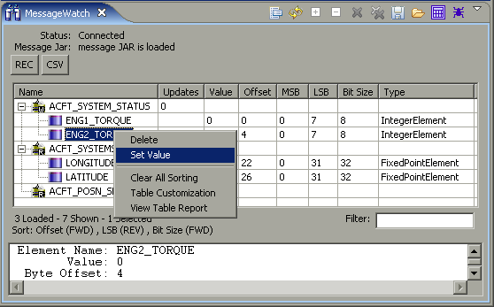

Message View - Set Value
What it is
Modifies the value of an element on a Writer buffer.

How to do it
From a
Writer
Message, right click and choose "Set Value". Enter the desired value, and select "Ok".